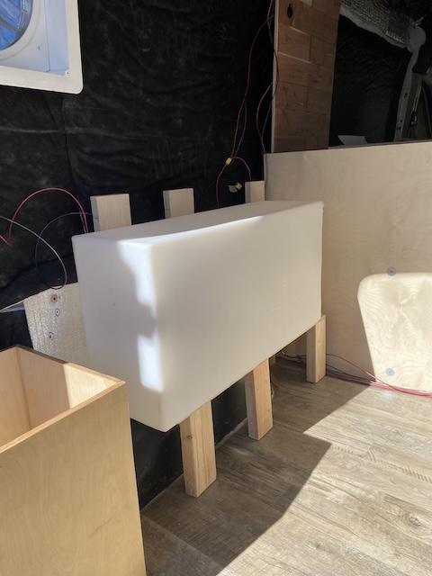
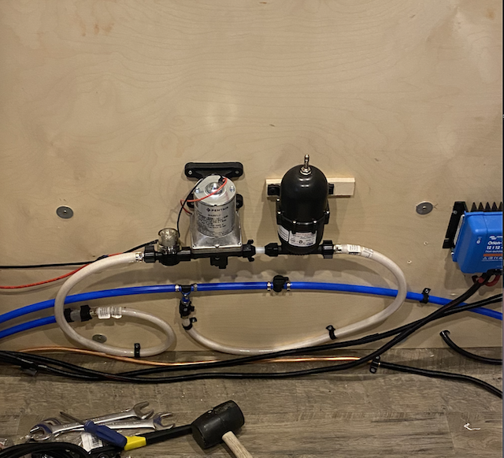
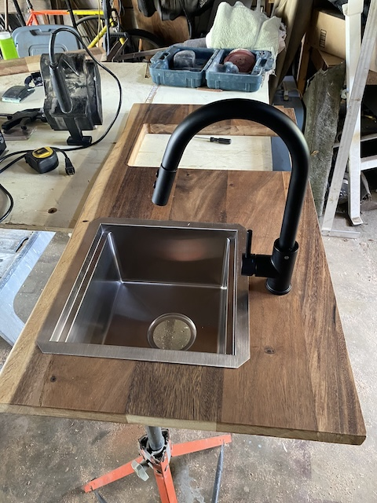
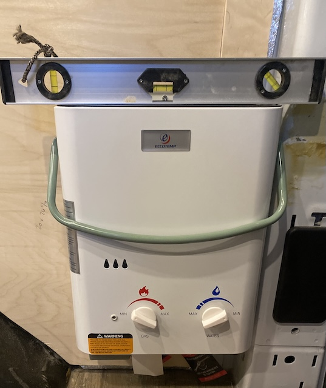
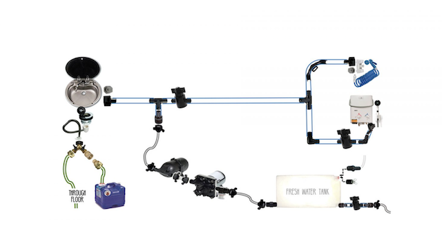

Plumbing System
The plumbing and water system gives the van running water for cooking, cleaning, and showering. It is powered by the electrical system and built to be simple, reliable, and easy to drain and clean for winter storage. The setup includes a 25-gallon fresh-water tank, a 12V pump, and a tankless propane hot-water shower.
Plumbing Components
| Component | Specification | Purpose |
|---|---|---|
| Fresh-Water Tank | 25 gallon polyethylene | Stores clean water supply |
| Water Pump | 12V DC, 3 GPM Shurflo | Pressurizes water lines |
| Sink Faucet | Single-handle faucet | Dispenses water at the sink |
| Tankless Hot-Water Heater | Propane-powered, instant adjustable heat | Provides hot showers |
| Gray-Water Drain | ½-inch flexible tubing | Routes used water into 5-gallon bucket |
Fresh-Water Tank
A 25-gallon tank sits in the rear of the van, positioned near the fill port for easy refilling and draining. It’s strapped down securely and vented to prevent pressure buildup.
Water Pump
The 12V Shurflo pump pressurizes the system whenever the sink or shower is turned on. It draws from the main tank and pushes water through reinforced ½-inch tubing.
Sink & Faucet
The sink drains to a gray-water line routed underneath the van. The faucet runs cold water directly from the pump and can be turned on or off with a single handle.
Tankless Hot-Water Shower
The propane tankless heater provides instant hot water for showering. It connects to the same pressurized water line as the sink and mounts on the rear door for outdoor use.
System Overview
This diagram shows the overall flow of water through the system, from the fresh tank to the pump, sink, and shower.
